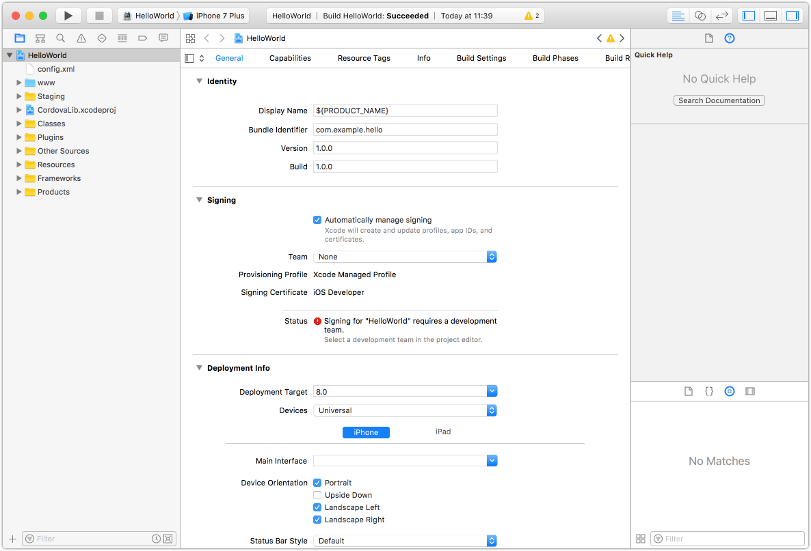
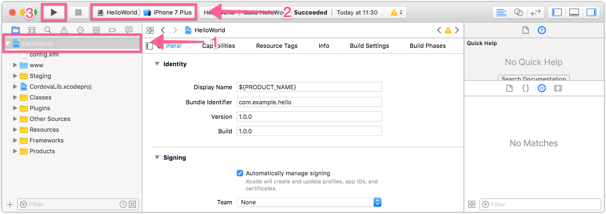
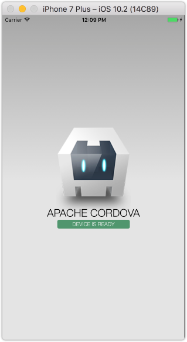
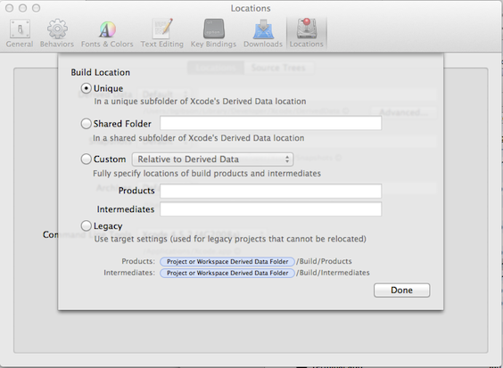

iOS Platform Guide
Ce guide montre comment configurer votre environnement de développement SDK pour déployer des applications de Cordova pour appareils iOS comme l'iPhone et l'iPad. Voir ci-dessous pour plus d'informations spécifiques à la plateforme :
Les outils de ligne de commande ci-dessus se référer aux versions antérieures à la 3.0 de Cordova. Voir l'Interface de ligne de commande pour plus d'informations sur l'interface actuelle.
Exigences et soutien
Apple ® outils nécessaires pour construire des applications iOS exécutées uniquement sur le système d'exploitation OS X sur les Macs à processeurs Intel. Xcode ® 6.0 (la version minimale requise) s'exécute uniquement sur OS X version 10.9 (Mavericks) ou supérieur et comprend l'iOS 8 SDK (Software Development Kit). Pour soumettre des applications de l'Apple App Store, il faut les dernières versions des outils Apple.
Vous pouvez tester de nombreuses fonctionnalités Cordova à l'aide de l'émulateur iOS installé avec l'iOS SDK et Xcode, mais vous avez besoin d'un périphérique réel pour tester complètement l'ensemble des fonctionnalités de l'application du dispositif avant de le soumettre à l'App Store. Le dispositif doit avoir au moins iOS 6.x installé, la version iOS minimum supporté à partir de 3.0 de Cordova. Dispositifs de soutien comprennent tous les iPad ® modèles, iPhone ® 3GS et qui précède et iPod ® Touch 3e génération ou ultérieur. Pour installer des applications sur un périphérique, vous devez également être membre d' Apple iOS Developer Program, qui coûte 99 $ par an. Ce guide montre comment déployer des apps pour l'émulateur iOS, pour lequel il ne faut pas s'inscrire au programme de développeur.
L' ios-sim et ios-deploy outils - permet de lancer iOS apps dans le simulateur d'iOS et iOS appareil de la ligne de commande.
Installer le SDK
Il y a deux façons de télécharger Xcode :
sur l' App Store, disponible en tapant "Xcode" dans l'application de L'App Store .
de Téléchargements de développeur Apple, qui nécessite un enregistrement comme développeur d'Apple.
Une fois installé Xcode, plusieurs outils de ligne de commande doivent être activées pour Cordova à exécuter. Dans le menu de Xcode , sélectionnez Préférences, puis l'onglet téléchargements . Dans le panneau composants , appuyez sur le bouton installer à côté de la liste Des outils de ligne de commande .
Installer déployer des outils
Exécuter à partir de terminal Command-line :
$ npm install -g ios-sim
$ npm install -g ios-deploy
Créez un nouveau projet
Utilisez l'utilitaire de cordova à mettre en place un nouveau projet, tel que décrit dans The Cordova The Command-Line Interface. Par exemple, dans un répertoire de code source :
$ cordova create hello com.example.hello "HelloWorld"
$ cd hello
$ cordova platform add ios
$ cordova prepare # or "cordova build"
Déployer l'application
Pour déployer l'application sur un appareil iOS connecté :
$ cordova run ios --device
Pour déployer l'application sur un émulateur d'iOS par défaut :
$ cordova emulate ios
Vous pouvez utiliser cordova run ios --list pour voir toutes les cibles disponibles et cordova run ios --target=target_name pour exécuter l'application sur un émulateur ou un périphérique spécifique (par exemple, cordova run ios --target="iPhone-6").
Vous pouvez également utiliser cordova exécuter--help pour voir construire supplémentaire et exécuter les options.
Ouvrez un projet dans le SDK
Une fois que la plateforme ios est ajouté à votre projet, vous pouvez l'ouvrir depuis dans Xcode. Double-cliquez dessus pour ouvrir le fichier hello/platforms/ios/hello.xcodeproj . L'écran devrait ressembler à ceci :

Déployer sur émulateur
Pour afficher un aperçu de l'application dans l'émulateur iOS :
Assurez-vous que le fichier .xcodeproj est sélectionné dans le panneau de gauche.
Sélectionnez l'application Bonjour dans le panneau immédiatement à droite.
Sélectionnez le dispositif prévu dans le menu de la barre d'outils système , tels que l'iPhone Simulator 6.0 comme mis en évidence ici :

Appuyez sur le bouton exécuter qui apparaît dans la barre d'outils même vers la gauche du schéma. Qui s'appuie, déploie et exécute l'application dans l'émulateur. Une demande distincte émulateur s'ouvre et affiche l'application :

Qu'un émulateur peut exécuter à la fois, donc si vous voulez tester l'app dans un émulateur différent, vous devez quitter l'application de l'émulateur et exécuter une cible différente dans Xcode.
Xcode est livré avec les émulateurs pour les dernières versions des iPhone et iPad. Des versions plus anciennes peuvent être obtenues auprès du Xcode → préférences → téléchargements → composants panneau.
Déployer sur le périphérique
Pour plus d'informations sur les différentes exigences de déployer sur un périphérique, reportez-vous à la section de Lancer votre application sur les périphériques de Apple Sur les Workflows Distribution App. En bref, vous devez effectuer les opérations suivantes avant de déployer :
Rejoignez l'Apple iOS Developer Program.
Créer un profil de mise en service au sein de l' iOS Provisioning Portal. Vous pouvez utiliser son Développement Provisioning Assistant pour créer et installer le profil et certificat Xcode exige.
Vérifiez la Signature du Code de la section Identité de signature de Code dans les paramètres de projet est définie sur votre nom de profil provisionnement.
Pour déployer sur le périphérique :
Utilisez le câble USB pour brancher l'appareil à votre Mac.
Sélectionnez le nom du projet dans la liste déroulante de la fenêtre de Xcode régime .
Sélectionnez votre périphérique dans la liste déroulante périphérique . S'il est branché via USB, mais n'apparaît toujours pas, appuyez sur le bouton de l'Organiseur pour résoudre toutes les erreurs.
Appuyez sur le bouton exécuter pour générer, déployer et exécuter l'application sur votre appareil.
Problèmes courants
Avertissements de désapprobation: lorsqu'une application interface de programmation (API) est modifiée ou remplacée par une autre API, il est marqué comme obsolète. L'API fonctionne à court terme, mais est finalement supprimé. Certaines de ces interfaces déconseillées sont consignées dans Apache Cordova et Xcode émet des avertissements à leur sujet lorsque vous générez et déployez une application.
Avertissement de Xcode sur la méthode de invokeString concerne une fonctionnalité qui lance une application à partir d'une URL personnalisée. Alors que le mécanisme à charger à partir d'une URL personnalisée a changé, ce code est toujours présent pour fournir des fonctionnalités en arrière pour les applications créées avec des versions plus anciennes de Cordova. L'exemple d'application n'utilise pas cette fonctionnalité, donc ces avertissements peuvent être ignorés. Pour éviter ces avertissements d'apparaître, supprimez le code qui fait référence à l'obsolète invokeString API :
Modifiez le fichier Classes/MainViewController.m , entourent le bloc suivant de code avec
/*et*/commentaires comme indiqué ci-dessous, puis tapez commande + s pour enregistrer le fichier :(void)webViewDidFinishLoad:(UIWebView*)theWebView { // only valid if ___PROJECTNAME__-Info.plist specifies a protocol to handle /* if (self.invokeString) { // this is passed before the deviceready event is fired, so you can access it in js when you receive deviceready NSLog(@"DEPRECATED: window.invokeString - use the window.handleOpenURL(url) function instead, which is always called when the app is launched through a custom scheme url."); NSString* jsString = [NSString stringWithFormat:@"var invokeString = \"%@\";", self.invokeString]; [theWebView stringByEvaluatingJavaScriptFromString:jsString]; } */ // Black base color for background matches the native apps theWebView.backgroundColor = [UIColor blackColor]; return [super webViewDidFinishLoad:theWebView]; }Modifiez le fichier Classes/AppViewDelegate.m , commentez la ligne suivante en insérant une double barre oblique, comme indiqué ci-dessous, puis tapez la commande + s pour enregistrer le fichier :
//self.viewController.invokeString = invokeString;Appuyez sur commande + b pour reconstruire le projet et à éliminer les avertissements.
Missing Headers: erreurs de Compilation relatives aux en-têtes manquants résultent de problèmes avec l'emplacement de build et peuvent être résolus via les préférences de Xcode :
Sélectionnez Xcode → préférences → emplacements.
Dans la section de Données dérivées , appuyez sur le bouton avancé et sélectionnez Unique comme Emplacement de construire , comme illustré ici :

Il s'agit du paramètre par défaut pour une nouvelle installation de Xcode, mais elle peut être définie différemment suite à une mise à niveau d'une ancienne version de Xcode.
Pour plus d'informations, consultez la documentation d'Apple :
Démarrer le développement iOS Apps aujourd'hui fournit un aperçu rapide des étapes pour le développement iOS Apps.
Page d'accueil membre Center fournit des liens vers plusieurs iOS des ressources techniques, y compris les ressources techniques, le portail de mise en service, les guides de la distribution et les forums communautaires.
Vidéos de session depuis le Apple World Wide Developer Conference 2012 (WWDC2012)
La commande de sélection xcode, qui permet de spécifier la version correcte de Xcode, si plus d'un est installé.
(Mac ® OS X, Apple Xcode ®, App Store, iPad ®, iPhone ®, iPod ® et Finder ® sont des marques déposées de Apple Inc.)